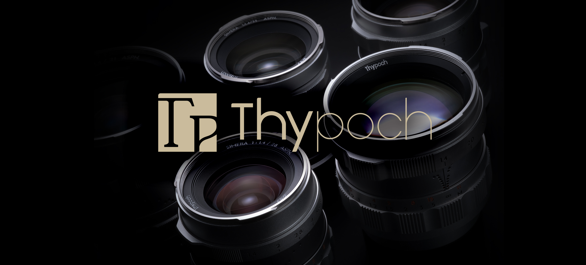
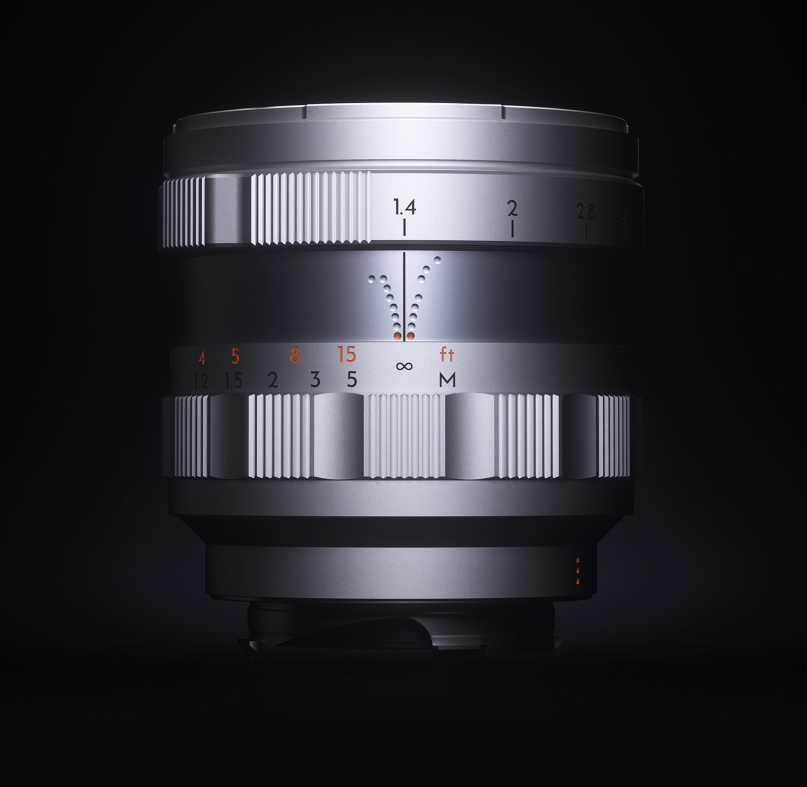
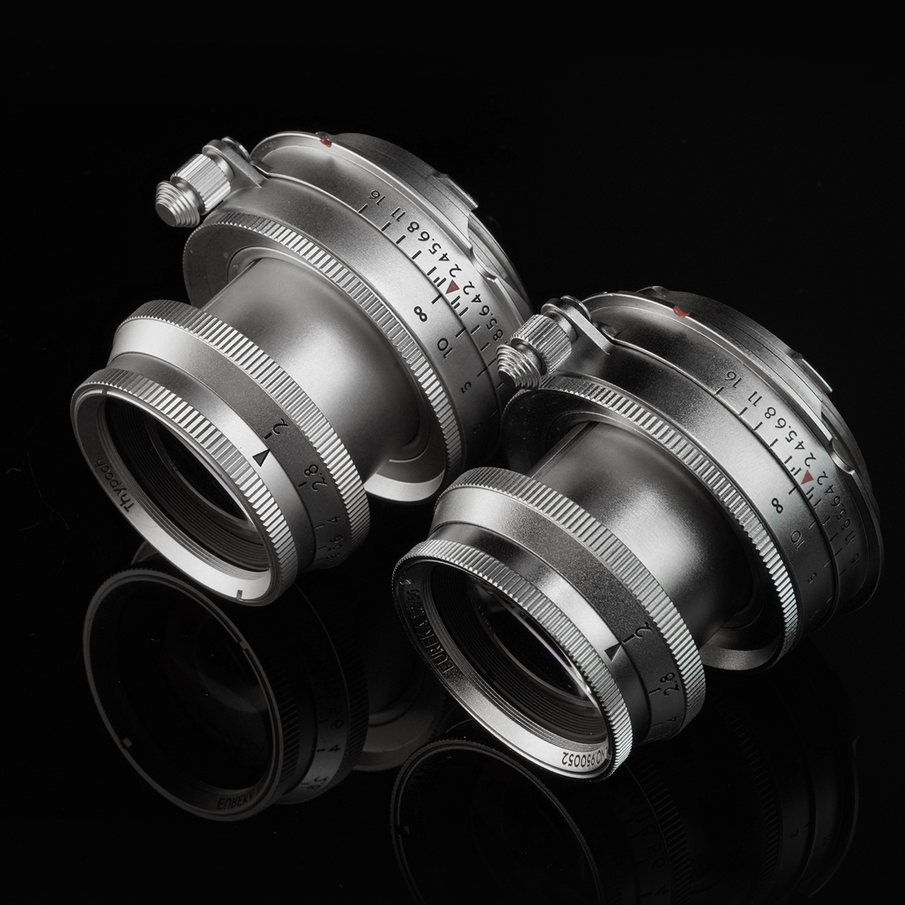
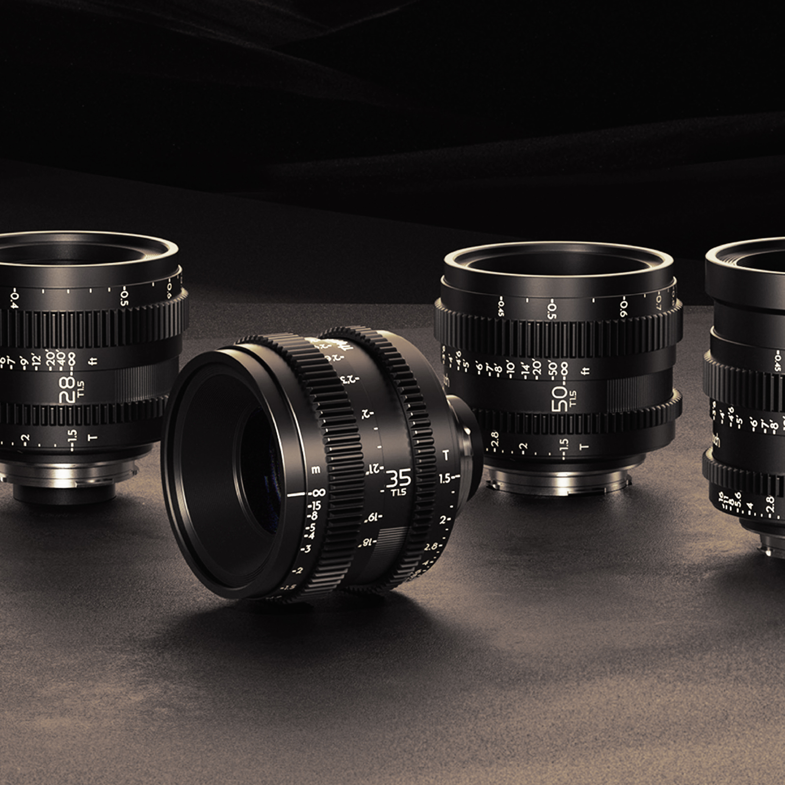
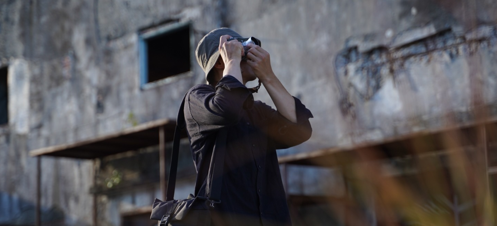
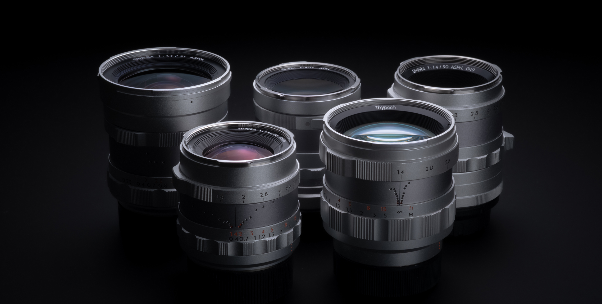
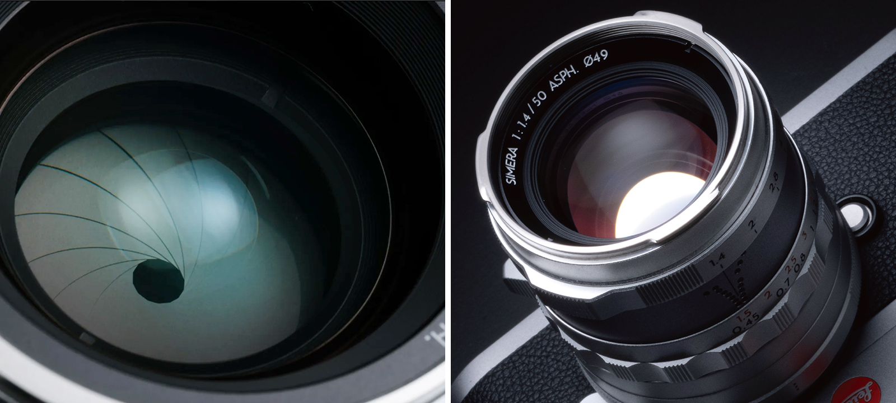
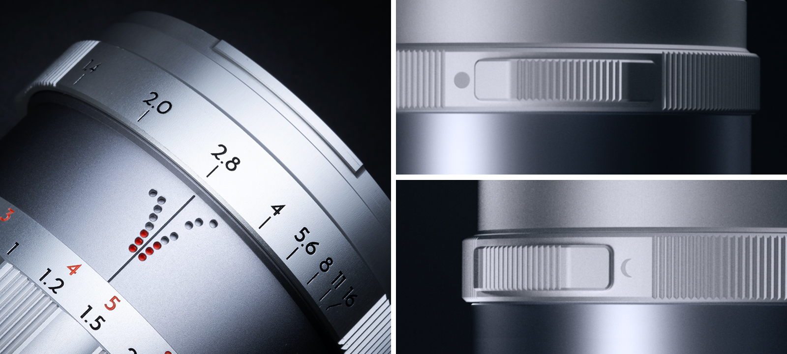
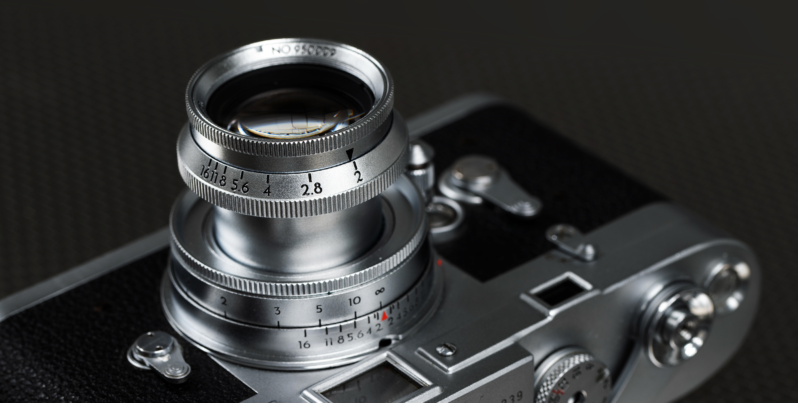
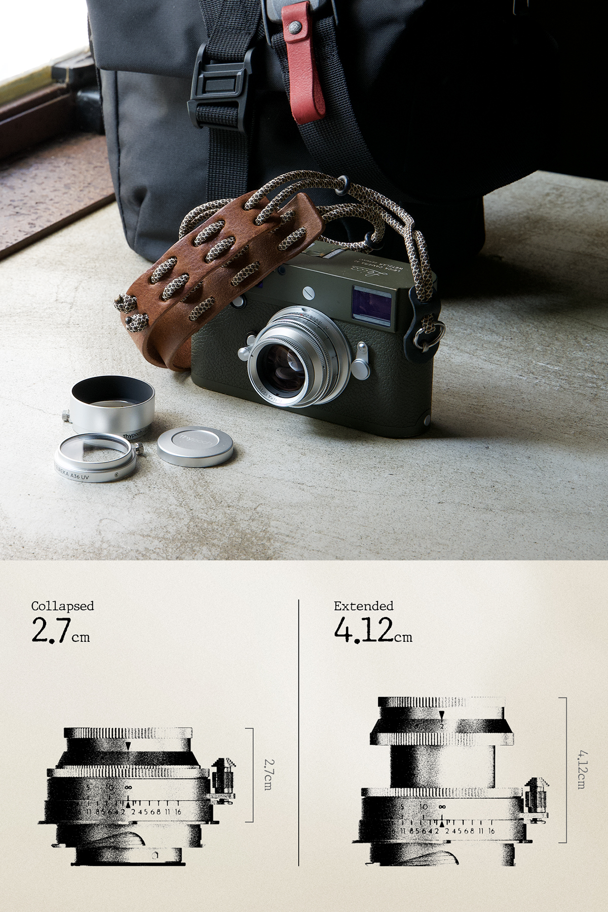

Simera Series
Simera（シメラ）は、ギリシャ語で「今日」を意味する“σήμερα（シーメラ）”に由来し、光学性能を追求するプロフェッショナル向けシリーズ。ラインアップはすべて開放F1.4の大口径単焦点。複数の特殊レンズとフローティング機構を組み合わせ、近接から無限遠まで高い解像力を保ちながら、シネマティックな描写を実現します。
Simeraを見る
Thypoch（タイポック）は、古英語の “thy（あなた）” と “epoch（時代）” に由来し、そのブランド名には「あなたの時代に寄り添う」という願いが込められています。
往年のレンジファインダー期の精巧な機械設計と、現代の光学技術を融合したプロダクトを開発しており、また、シネマレンズで知られる「DZOFILM」と密接な関係を持つグループブランドであり、そのノウハウを受け継いだ設計が大きな特徴です。
Thypoch（タイポック） は、レンズの描写や操作性をライカMシリーズに合わせた設計を特徴とし、レンジファインダー用カメラにおける距離計連動機構にも対応。写真用の「Simera（シメラ）」「Eureka（エウレカ）」シリーズに加え、超小型・軽量設計のフルフレーム対応シネマ単焦点シリーズ「Simera-C」を展開しています。
Simera（シメラ）は、ギリシャ語で「今日」を意味する“σήμερα（シーメラ）”に由来し、光学性能を追求するプロフェッショナル向けシリーズ。ラインアップはすべて開放F1.4の大口径単焦点。複数の特殊レンズとフローティング機構を組み合わせ、近接から無限遠まで高い解像力を保ちながら、シネマティックな描写を実現します。
Simeraを見る

50mm f/2（沈胴式）ヴィンテージの描写美を現代に蘇らせるコンセプトの新コレクション。均質化が進む現代のレンズ設計において、Eurekaは各時代のクラシックレンズの意匠と描写傾向を、現代品質で再解釈しました。 “今日”のための精緻さを追求する「Simera（シメラ）」に対し、「Eureka」は過去の美意識を現代へ結ぶシリーズです。沈胴構造とクラシカルな機構が特長です。
Eurekaを見るSimera-C シリーズは、フルサイズセンサー対応のシネマレンズです。クラッシックなレンジファインダーレンズの設計思想に、DZOFILMのシネマ技術と最先端の光学設計を融合させることで、高い解像性能と小型・軽量化を両立。
Simera-C T1.5を見る
Thypochの光学設計は、単なる技術の集合ではなく映像芸術への飽くなき探求です。自然で繊細な色彩と階調表現で、インスピレーションに満ちた映像を捉えます。

写真家一人ひとりには、独自の「世界の見方」があります。Thypochが目指すのは、単なるレンズではなく、視覚の延長となるような「自分の目」と感じられる存在。写真とは、完璧な技術を追うことではなく「人生を彩る一瞬を瞬間を捉えること」 。
未来の人々が過去を振り返ったとき、彼らは私たちが「この時代をどう見ていたのか」を思い出すはずです。


Shimera シリーズは、コンパクトながらも優れた描写力を実現します。近距離撮影での高い性能を発揮、また、非球面レンズ1枚、EDレンズ1枚、高屈折レンズ3枚の高度な光学設計を採用し、色収差や球面収差を効果的に抑制。開放F1.4でもクリアで安定した描写を可能にします。14〜16枚の絞り羽根による柔らかく美しいボケは、被写体を際立たせ、幻想的な雰囲気を演出します。

撮影距離に応じた被写界深度を可視化するVisifocus（被写界深度ビジュアルスケール）を搭載。撮影距離・絞り操作に合わせて合焦の前後域を直感的に読み取り、素早いピント合わせをサポート。 絞りリングには「太陽」と「月」のシンボルを刻印し、「クリックの有無」を切り替え可能です。 好みに応じた操作性を実現します。

Thypoch「Eureka（エウレカ）」シリーズは、古代ギリシャの学者アルキメデスの感嘆句 “Eureka（見つけた！）” に着想を得た、ヴィンテージ・イメージを探求する新コレクションです。

1925年、35mm判フィルムを用いた小型カメラとコンパクトな沈胴式50mmレンズの登場は、人々を大判カメラの制約から解き放ち、ポケットに入る小さな機材で街頭から最前線までを記録する新時代を切り拓きました。その精神に敬意を払い沈胴式デザインを現代の技術で再構築しました。
工芸品のように美しく仕上げられた外装は、滑らかな操作感とともにライカボディに美しく調和します。 レトロな雰囲気と高い描写力、優れた携帯性を備え、決定的な瞬間を捉える理想のパートナーとなります。
クラシカルな光学設計に最新のレンズコーティング技術を組み合わせ、鮮やかで豊かな色再現と高いシャープネスを実現。奥行きのある立体感と、わずかに回転するような独特のボケ味が、ヴィンテージライクな質感をもたらします。
Thypoch（タイポック）Simera-C シリーズは、フルサイズセンサー対応のシネマレンズです。クラッシックなレンジファインダーレンズの設計思想に、DZOFILMのシネマ技術と最先端の光学設計を融合させることで、高い解像性能と小型・軽量化を両立。シリーズ共通の開放T1.5により、さまざまな光量条件で優れた描写力を発揮します。光学系は、ASPH非球面レンズ、EDレンズ、高屈折レンズを組み合わせ、解像力の向上と優れた色収差抑制を実現。8Kクラスの映像制作にも対応します。16枚羽根の絞りは滑らかで美しい円形ボケを生み、自然でやわらかな背景表現が被写体を引き立て、作品の完成度を高めます。
Simera-Cシリーズは、航空宇宙グレードのアルミニウム合金製のオールメタルボディを採用し、強度と軽さを高い次元で両立しています。 重量はわずか369〜491g。330ml缶より少し重い程度の質量で、さらにコンパクトな形状です。シネマレンズは“大型・重量級”という常識から解き放たれ、ハンドヘルド、ジンバル、ドローンなど、どのような撮影スタイルにもシームレスに対応します。 内部構造は防塵・耐スプラッシュ設計で、過酷な現場でも高い信頼性を発揮します。
Thypochのレンズは、古き良きデザインへの深い敬意から生まれました。 世界の映像業界がスピードや解像感、自動化を追い求める中で、あえて別の道を選んで生まれたレンズ ――21世紀の光学技術に、20世紀半ばの機械的な美しさ、精密な設計とヴィンテージの美意識を融合させたといえるでしょう。
Thypochレンズは、非球面レンズ（ASPH.）やフローティングレンズ群（FLE）を組み合わせた高度な光学設計を採用しています。精密な研磨・ポリッシングによる非球面加工は、球面収差や歪曲を抑え、大口径開放時でも一貫したシャープネスと、クリーンで純粋なボケを描き出します。 さらにFLE（Floating Lens Elements）構造により、ピント合わせの際、内部のフローティングレンズが異なる焦点距離での収差を補正し、シャープな描写を可能にします。
Thypochは、東正光学（DZOptics）が培った産業用レンズ研究開発のバックグラウンドに加え、シネマレンズブランド「DZOFILM」で築いた光学精度のレガシーを継承しています。最先端のマシンビジョンおよび光学測定技術を保有しており、NASA向け高精度VRレンズの開発や、世界的な半導体メーカーへの技術サポートなどのを提供をおこなってきました。こうした高度な技術基盤が、Thypochレンズの精度と信頼性を支えています。